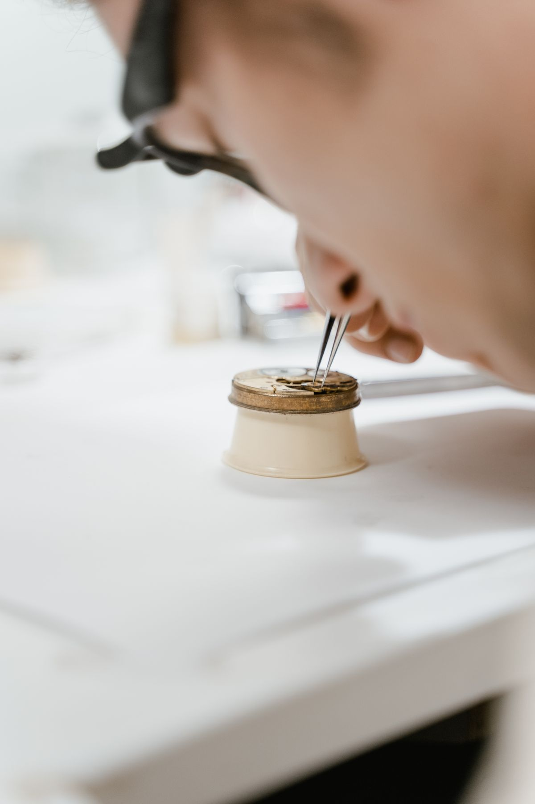
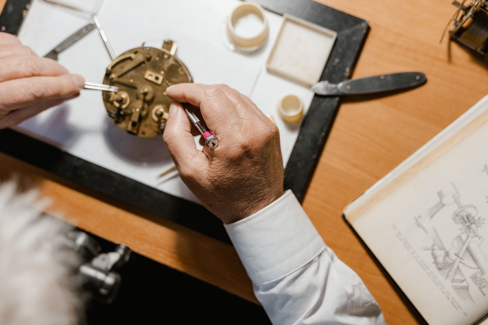

The Watchmaker
Amos Whitaker — forty years at one bench trade
I started in 1983 as an apprentice in a Manchester repair shop, sweeping floors and sorting screws before I was allowed near a movement. The training took five years: strip, clean, rebuild, time — hundreds of watches, most of them ordinary, which is exactly the right way to learn. Ordinary watches are where the habits form.
After the apprenticeship came eleven years in the service department of a London retailer, working to the makers’ standards on modern calibres, then a deliberate move back to independent work. The workshop in Bath is one room and one bench. I take in fewer watches than a service centre would, and every one of them is worked on by the same pair of hands from assessment to final timing.
My particular interest is post-war watches — the 1940s to the 1970s — because they were built to be serviced forever and mostly still can be, if the person servicing them respects what they are. That respect has a practical shape in this workshop: original parts and finishes are kept wherever they can be, substitutions are agreed before they happen, and nothing cosmetic is done to a vintage watch without a conversation first.
Work is guaranteed for 24 months. If a serviced watch misbehaves inside that period for a reason connected with the work, it comes back to the bench and is put right without charge.

The Bench
The equipment the numbers come from
A timing figure is only as honest as the machine that measured it. This is what your watch meets on the bench, and what each machine is for.
| Timing machine | Listens to the escapement and measures rate, amplitude and beat error in up to six positions. Every figure quoted on this site — and on your invoice — comes off this machine, before and after. |
|---|---|
| Stereo microscope & loupes | Inspection at 10× to 40×. Worn pivots, cracked jewels and bent teeth are invisible to the naked eye and obvious under the microscope; this is where the estimate is really written. |
| Ultrasonic cleaning machine | Baskets of parts cleaned in watchmaking solutions, then rinsed and hot-air dried. Dried, dirty oil is the single commonest cause of a watch losing time. |
| Pressure testers, dry & wet | The dry tester checks for leaks under air pressure; the wet tester takes a sealed watch to its rated depth equivalent. A dive watch leaves here tested, with the result in writing. |
| Watchmaker’s lathe & staking set | For the parts nobody sells any more: re-pivoting a balance staff, bushing a worn plate, turning a screw. This is what makes a 1910 pocket watch serviceable at all. |
| Demagnetiser | A ten-second pass that removes magnetism from a movement — the fix for the commonest “sudden” fault there is. See the care guide below. |

Parts Policy
Genuine, pattern, or made — stated plainly
Many makers will not sell parts to independent watchmakers at all. That is the trade as it stands, and you deserve to know how your watch is handled inside it. The order of preference at this bench is fixed:
First, genuine maker parts, where the maker supplies them or they can be obtained through trade channels. Second, new-old-stock — original parts from discontinued production, still sealed. Third, pattern parts of Swiss or German manufacture, made to the original specification. Fourth, a part made on the lathe here, which for obsolete movements is often the only honest option.
Whichever it is, three rules apply. The part used is named on your invoice — genuine, new-old-stock, pattern or bench-made. Any substitution beyond the estimate is agreed with you before it is fitted, with its price. And every part taken out of your watch comes back to you in a bag with it, worn mainspring and all.
One more thing, because it is asked often: I will not fit a part whose only purpose is to make a watch look like a more expensive watch. Servicing keeps a watch itself; it does not dress it up as something else.
Owner Care
Looking after a mechanical watch
Most of what brings a watch to the bench early is preventable. The three things that matter most:
Service it every 4–6 years
A movement’s oils dry and thicken with age whether the watch is worn or not. After five years or so the watch is effectively running dry, and every day it runs, pivots wear against their jewels. A service at the right interval is cleaning and oil; a service ten years late is cleaning, oil and parts. If the rate drifts or the crown starts to feel stiff to wind, don’t wait for the calendar — those are the watch asking.
Mind the magnets
The commonest sudden fault: a watch that kept good time yesterday gains minutes a day today. The hairspring has been magnetised and its coils are sticking together. Sources are everywhere — phone and tablet cases with magnetic clasps, speakers, handbag fasteners, laptop lids. The cure takes minutes on a demagnetiser and costs little; the mistake is paying for a service you don’t need. If the rate changed overnight, have it demagnetised and timed first.
Store it dry and unwound watches wound
Keep watches somewhere dry — not a bathroom shelf, where steam finds every gasket. A manual-wind watch in rotation should be wound gently until resistance firms up, never forced. A watch resting for months benefits from a full wind once a month to move the oils. Leather straps die fastest of all: keep them dry, and expect two to four years from one worn daily.
Water resistance, honestly
The number on the dial is a static laboratory pressure applied to a new watch with new seals — not a depth you can take it to, and not a promise that survives the seals ageing. What the ratings mean in practice:
| 30 m / 3 ATM | Rain and splashes at the sink. Not showering, not swimming — whatever the marketing implies. |
|---|---|
| 50 m / 5 ATM | Showering and a brief, gentle swim at the surface, if the seals are current. Most watchmakers, this one included, would still take it off. |
| 100 m / 10 ATM | Swimming and snorkelling, provided the crown is screwed or pushed fully home and seals are checked every two years. |
| 200 m / 20 ATM and over | Proper diving ratings, on watches built for it. Still conditional on current seals — have a diving watch pressure-tested before every season, not after a flood. |
Never operate the crown or pushers in the water, and if moisture ever appears under the glass, keep the watch dry and unworn and get it to a bench within days — rust starts within the week.
Questions about your watch?
Symptoms, a rough age, a photograph of the dial — that is enough to start. You will get a straight answer about what it needs, including when the answer is “less than you feared”.
Ask the bench or write directly: bench@whitaker-watch.example